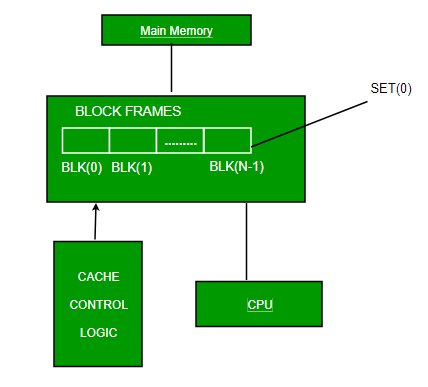
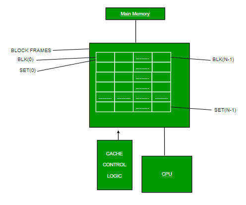

As CPU has to fetch instruction from main memory speed of CPU depending on fetching speed from main memory. CPU contains register which has fastest access but they are limited in number as well as costly. Cache is cheaper so we can access cache. Cache memory is a very high speed memory that is placed between the CPU and main memory, to operate at the speed of the CPU.
It is used to reduce the average time to access data from the main memory. The cache is a smaller and faster memory which stores copies of the data from frequently used main memory locations. Most CPUs have different independent caches, including instruction and data.
{kind=link}
Levels of memory –
- Level 1 or Register – It is a type of memory in which data is stored and accepted that are immediately stored in CPU. Most commonly used register is accumulator, Program counter, address register etc.
- Level 2 or Cache memory – It is the fastest memory which has faster access time where data is temporarily stored for faster access.
- Level 3 or Main Memory – It is memory on which computer works currently it is small in size and once power is off data no longer stays in this memory
- Level 4 or Secondary Memory – It is external memory which is not fast as main memory but data stays permanently in this memory
Cache Performance
When the processor needs to read or write a location in main memory, it first checks for a corresponding entry in the cache.
- If the processor finds that the memory location is in the cache, a cache hit has occurred and data is read from chache
- If the processor does not find the memory location in the cache, a cache miss has occurred. For a cache miss, the cache allocates a new entry and copies in data from main memory, then the request is fulfilled from the contents of the cache.
The performance of cache memory is frequently measured in terms of a quantity called Hit ratio.
Hit ratio = hit / (hit + miss) = no. of hits/total accesses
We can improve Cache performance using higher cache block size, higher associativity, reduce miss rate, reduce miss penalty, and reduce Reduce the time to hit in the cache.
Cache Mapping
The three different types of mapping used for the purpose of cache memory are as follow,
- Direct mapping
- Associative mapping,
- Set-Associative mapping.
Direct mapping: In direct mapping assigned each memory block to a specific line in the cache. If a line is previously taken up by a memory block when a new block needs to be loaded, the old block is trashed. An address space is split into two parts index field and tag field. The cache is used to store the tag field whereas the rest is stored in the main memory. Direct mapping`s performance is directly proportional to the Hit ratio.

Associative mapping: In this type of mapping the associative memory is used to store content and addresses both of the memory word. Any block can go into any line of the cache. This means that the word id bits are used to identify which word in the block is needed, but the tag becomes all of the remaining bits. This enables the placement of the any word at any place in the cache memory. It is considered to be the fastest and the most flexible mapping form.

Set-associative mapping: This form of mapping is a enhanced form of the direct mapping where the drawbacks of direct mapping is removed. Set associative addresses the problem of possible thrashing in the direct mapping method. It does this by saying that instead of having exactly one line that a block can map to in the cache, we will group a few lines together creating a set. Then a block in memory can map to any one of the lines of a specific set..Set-associative mapping allows that each word that is present in the cache can have two or more words in the main memory for the same index address. Set associative cache mapping combines the best of direct and associative cache mapping techniques
Sample GATE Question
Uses of Cache
- Usually, the cache memory can store a reasonable number of blocks at any given time, but this number is small compared to the total number of blocks in the main memory.
- The correspondence between the main memory blocks and those in the cache is specified by a mapping function.
Types of Cache
- Primary Cache – A primary cache is always located on the processor chip. This cache is small and its access time is comparable to that of processor registers.
- Secondary Cache – secondary cache is placed between the primary cache and the rest of the memory. It is referred to as the level 2 (L2) cache. Often, the Level 2 cache is also housed on the processor chip.
- Spatial Locality of reference – this says that there is chance that element will be present in the close proximity to the reference point and next time if again searched then more close proximity to the point of reference.
- Temporal Locality of reference – In this Least recently used algorithm will be used. Whenever there is page fault occurs within word will not only load word in main memory but complete page fault will be loaded because spatial locality of reference rule says that if you are referring any word next word will be referred in its register that’s why we load complete page table so complete block will be loaded.
Locality of reference
Since size of cache memory is less as compared to main memory. So to check which part of main memory should be given priority and loaded in cache is decided based on locality of reference.
Types of Locality of reference
Related questions –
1. A computer has a 256 KByte, 4-way set associative, write back data cache with block size of 32 Bytes. The processor sends 32 bit addresses to the cache controller. Each cache tag directory entry contains, in addition to address tag, 2 valid bits, 1 modified bit and 1 replacement bit. The number of bits in the tag field of an address is
(A) 11
(B) 14
(C) 16
(D) 27
Answer: (C)
Explanation: https://www.geeksforgeeks.org/gate-gate-cs-2012-question-54/
2. Consider the data given in previous question. The size of the cache tag directory is
(A) 160 Kbits
(B) 136 bits
(C) 40 Kbits
(D) 32 bits
Answer: (A)
Explanation: https://www.geeksforgeeks.org/gate-gate-cs-2012-question-55/
3.An 8KB direct-mapped write-back cache is organized as multiple blocks, each of size 32-bytes. The processor generates 32-bit addresses. The cache controller maintains the tag information for each cache block comprising of the following.
1 Valid bit
1 Modified bit
As many bits as the minimum needed to identify the memory block mapped in the cache. What is the total size of memory needed at the cache controller to store meta-data (tags) for the cache?
(A) 4864 bits
(B) 6144 bits
(C) 6656 bits
(D) 5376 bits
Answer: (D)
Explanation: https://www.geeksforgeeks.org/gate-gate-cs-2011-question-43/
Article Contributed by Pooja Taneja and Vaishali Bhatia. Please write comments if you find anything incorrect, or you want to share more information about the topic discussed above.